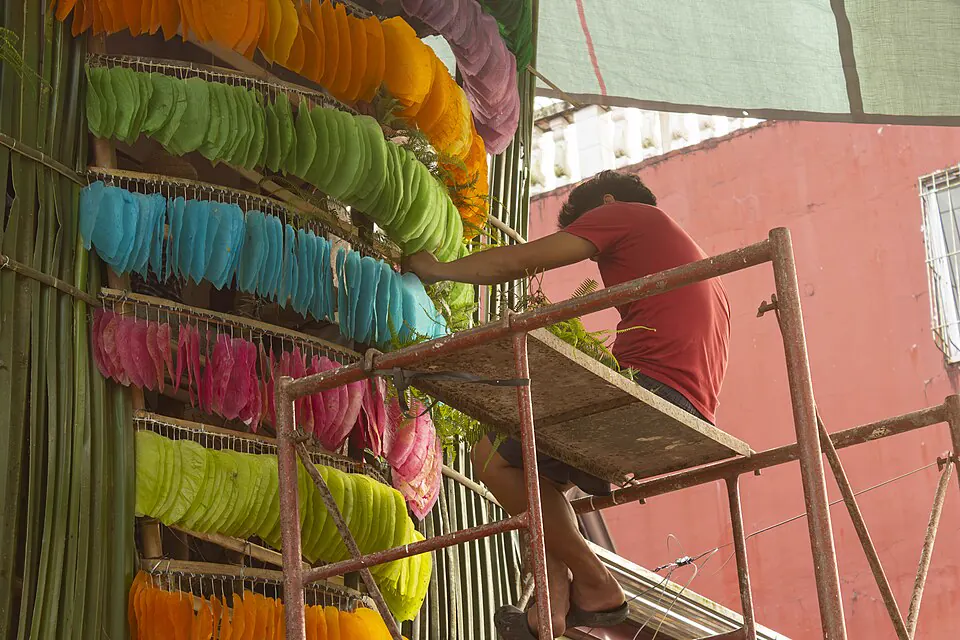

A town dressed in its harvest
Pahiyas, from the rice field to the kiping on every wall to the procession that passes on 15 May.

Every 15 May, the town of Lucban, at the foot of Mount Banahaw in Quezon, turns its houses into offerings. Rice stalks, fruit, vegetables and thousands of leaf-shaped rice wafers called kiping cover walls, windows and eaves. Then a procession carries the image of San Isidro Labrador, the patron saint of farmers, past every dressed house.
Pahiyas is a thanksgiving. The houses show what the year’s harvest gave, and the town gives thanks for it in public, on its own streets. The story told about San Isidro, a farmer who kept going to Mass while his field still got ploughed, came to the Philippines with the Spanish by way of Mexico. Lucban made the feast its own. Accounts disagree about when it began, and some place its roots as early as the 1500s, but the meaning has not changed. The harvest is shared, and shown.
We follow the feast from the field to the procession. Scroll, and the model builds each stage.
From rice to Pahiyas, in six stages
Drag the model to turn it. When the house is being dressed, keep scrolling: the kiping climbs the walls.
The harvest1 of 6
- 1
The harvest
The feast starts in the fields. Rice comes in, and families set aside the best stalks, grains and produce for the walls of their houses.
- 2
Rice into paste
Soaked rice is ground into a smooth paste and coloured: white, pink, yellow, green, and every shade the family likes that year.
- 3
Pressed on kabal leaves
The paste is spread thin over leaves, most of all the large kabal leaf, then steamed and peeled off. Each wafer keeps the shape and veins of its leaf. Makers also use leaves of coffee, talisay, cacao and saba banana.
- 4
Dried in the sun
Racks of kiping dry in the sun until they are crisp and light, like stained glass made of rice.
- 5
The house is dressed
Kiping goes up row by row, with rice stalks, fruit and vegetables. Wafers are strung into tiered, chandelier-like hangings called aranya that sway from the eaves.
- 6
The procession passes
On 15 May the image of San Isidro is carried along the route, past every dressed house. Afterwards the decorations come down. Kiping is edible, and much of it is grilled or fried, shared and eaten.
An offering, a contest and a gift
The houses along the procession route are the ones that are dressed, and for those families Pahiyas is months of work. The town also judges the façades, so the decoration has become a craft and a friendly rivalry at once. But the old idea holds underneath it: what a household shows on its walls is what it is thankful for.
The houses show what the year’s harvest gave, and the town gives thanks for it in public.

Kiping itself has a history worth telling. One account, from a Lucban maker quoted in the national press, credits Japanese residents with teaching the town to mould the wafers on kabal leaves. Whatever its origin, the leaf-shaped kiping is now so tied to Lucban that the town and the wafer are hard to separate.
Visiting with care
Pahiyas draws large crowds, and the houses are homes. Walk the route, admire the work, and ask before touching anything. Families sometimes hand out kiping to visitors; take it as the gift it is. If you want to bring some home, buy it from the makers in the town.